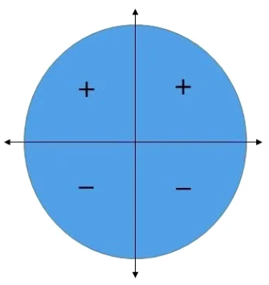

A função seno é uma função periódica e seu período é 2π. Ela é expressa por: f(x) = sen x
No círculo trigonométrico, o sinal da função seno é positivo quando x pertence ao primeiro e segundo quadrantes. Já no terceiro e quarto quadrantes, o sinal é negativo.
